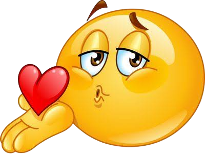
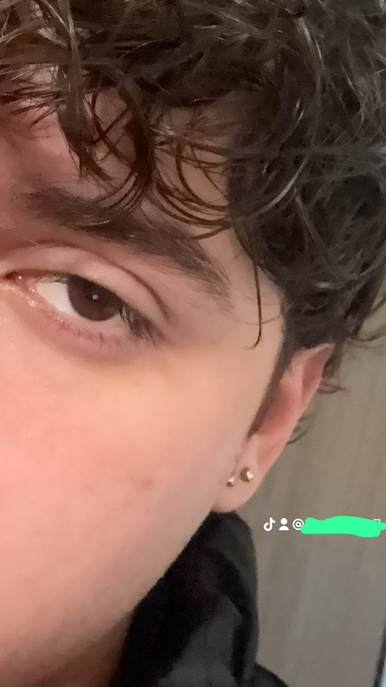
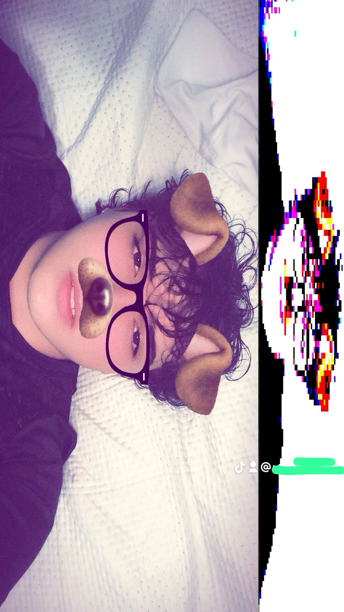
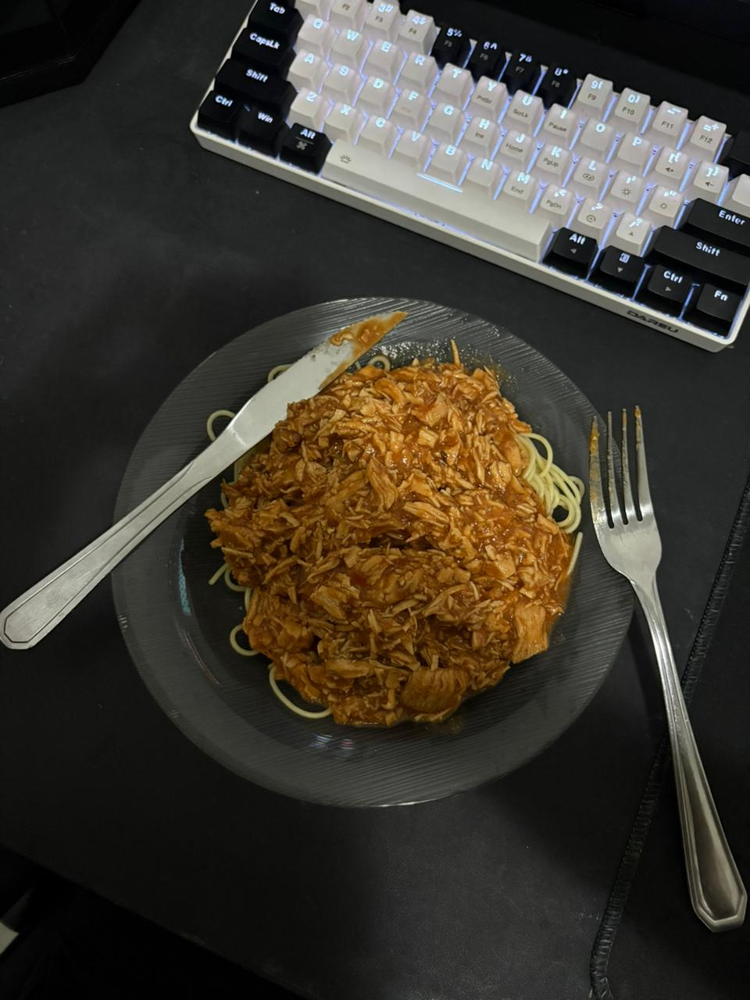
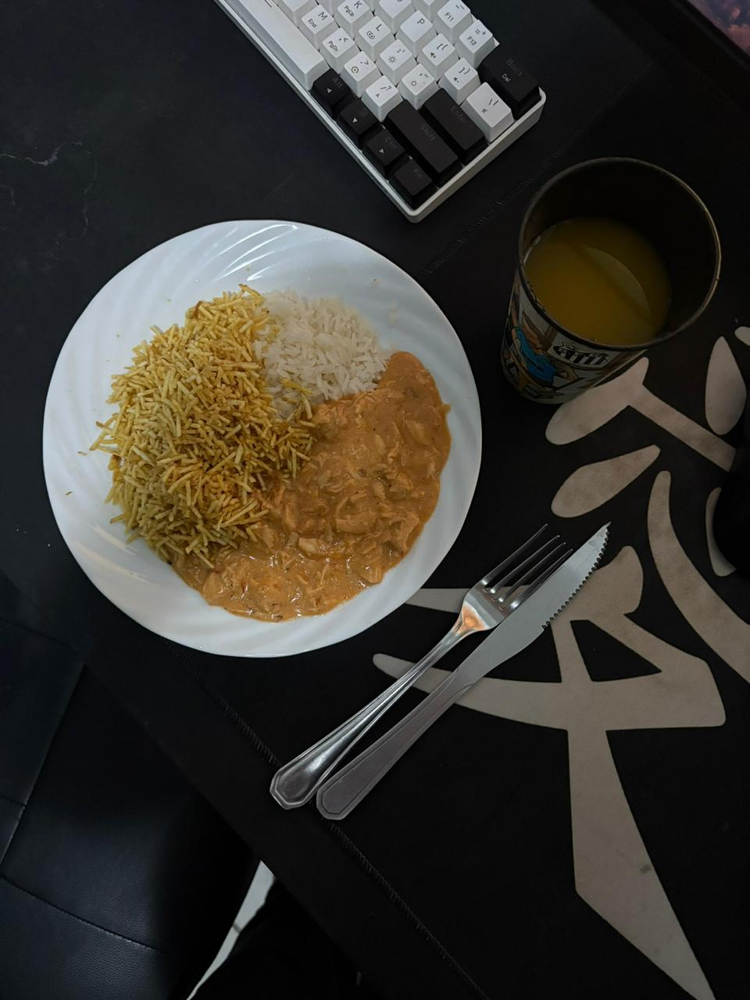
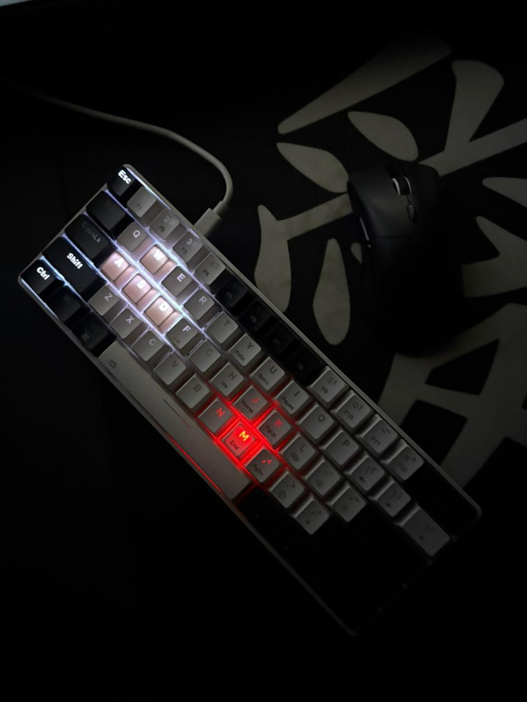
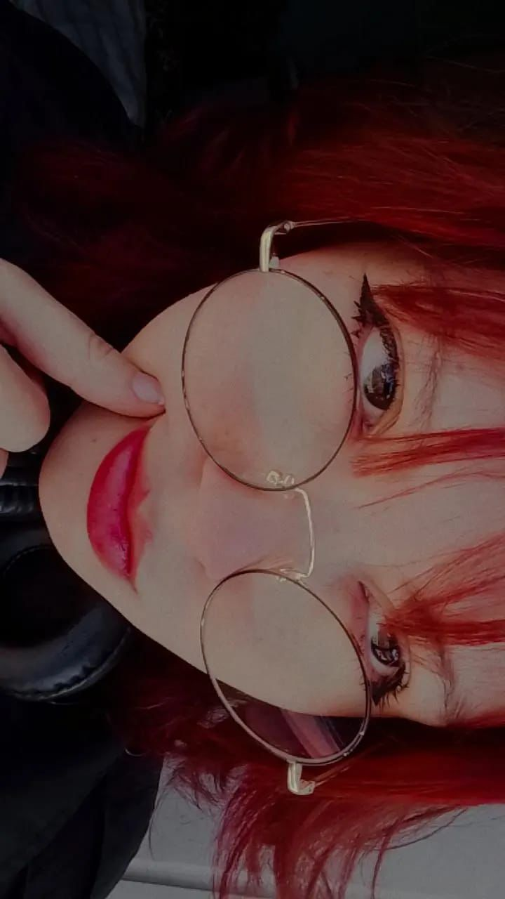
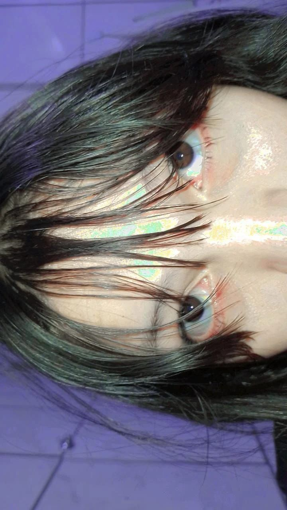
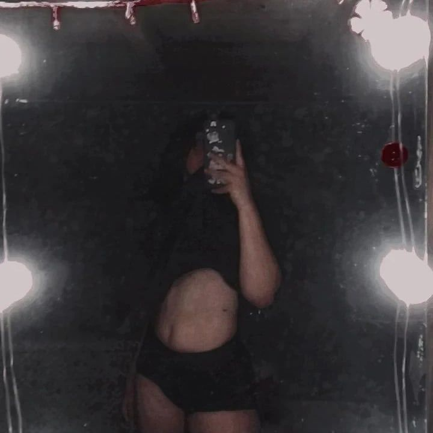
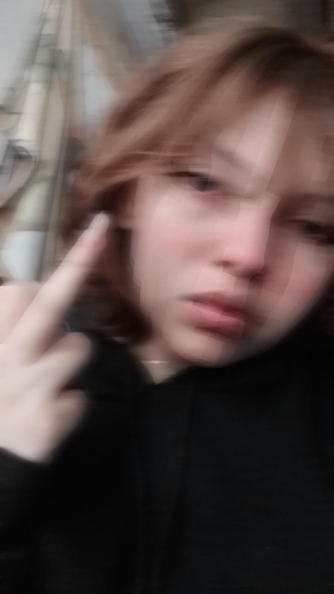

escolha a foto, ajuste, copie e cole no atributo data-fit dela (o LEIA-ME explica).
ei

respira fundo... isso aqui é sobre você.
(e sim, dá pra rolar a tela)
deixa eu te contar uma coisinha.
eu já tava meio cansado daquele Pop de Balão, eu e o Baiano formando casal atrás de casal, e confesso, sempre tinha uma, "ai, eu não quero ele, eu quero o host", aqueles papinhos que tu sabe. eu tinha a tag, tinha a filinha de gente... e mesmo assim, nada. ninguém me pegava de verdade.
aí, do nada, lá pelas 2 da manhã, apareceu uma tal de Morgana. e cara, foi diferente na hora. sua áurea era outra coisa. no mesmo dia você já tava me chamando no insta, e eu já tinha sido fisgado sem nem perceber direito.
e tem uma coisa que você acha que eu nunca soube (agora sabe pq eu já contei antes, mas eu não podia deixar essa passar KKKKKKK)
aquele dia que você puxou o Baiano pro cantinho pra falar de mim? pois é meu amor. minha telinha alcançava ali e eu ouvi TUDO. que tu tava afim, que eu era bonito, que eu parecia até fake (até hoje acho que você tava mentindo só pra me ganhar).
eu fingi que não escutei nadinha e segui de boa... mas o sorriso bobo que tu me arrancou naquele momento foi sacanagem. eu fui ganho ali na hora, e você nem fazia ideia.

repara nesse olhar.
morto? sim. olhar de 2 horas de sono? sim. mas é o mesmo que fica meio bobo, meio brilhando, toda santa vez que abre uma foto tua. não adianta nem tentar disfarçar, você já me conhece bem demais.

e então, esse é o meu cabelo, nunca te mostrei ele assim 100% cru, depois de lavado.
mas, ó, de vez em quando ele se arrepia sozinho... e quase sempre é quando rola aquela tua foto aqui na galeria. você sabe muito bem qual


toda vez que eu sento pra comer...
fico pensando que ia ser bem mais gostoso se tu tivesse aqui do lado, roubando do meu prato e reclamando que tá faltando sal é saudade de uma coisa que a gente nem viveu ainda, bizarro né?

essa aqui eu nunca te mostrei.
é a inicial do teu nome, sempre acesa no meu teclado. e como é na frente dessa tela que eu passo quase o dia inteiro... digamos que eu dei um jeitinho de te ter pertinho o tempo todo. é cafona pra carai, eu sei. mas é o tipo de cafonice que eu faria de novo.



e essa franja, cara... essa franja me ganha todinho.
de todo mundo daquele jogo, foi você, Geovana. tua áurea não era nem parecida com a de ninguém. eu te absorvi sem querer e agora já era, não tem volta, estou completamente entregue pra essa carinha, esse olhar, essa franja, esse jeito, esse tudo pqpqpqpqpqp.

olha o tamanho do respeito que essa mulher tem por mim
dedo do meio, língua de fora, fotos em ângulos que nem devia ser possível... e o pior é que é exatamente esse teu jeito doido que me deixa apaixonado feito um bobo.
eu sou péssimo com palavras (tu ja deve ter reparado KKKKKK). sério mesmo.
eu travo, eu enrolo, não consigo botar pra fora nem metade do que vai aqui dentro (la ele). mas eu sou feito ade ações: nas rosas que eu te mandei, no encontro que a gente já tá planejando mesmo com você em SC e eu em MG, na vontade que me bateu de dividir cada coisa contigo.
e o Dante? cara, isso não me assustou nem um pouquinho. muito pelo contrário. me deu vontade de pegar essa responsabilidade junto contigo, de poder chamar ele de meu filho também. isso aí, pra mim, fala mais alto que qualquer texto bonito que eu tentasse escrever.
aqui era pra vir o print de quando você mandou as rosas no servidor...
mas uma desgraçada invejosa apagou o chat geral (ICE FDPPPP MALDITA). >;(
mas eu lembro de cada detalhezinho.
o buquê de rosas que eu mandei, e você correndo pro servidor dos amigos só pra avisar geral que eu era romântico... e que ia casar comigo a qualquer custo. morri de vergonha, mas agora pode ir se preparando, viu, porque eu também vou.
eu podia ficar a noite toda te enchendo de declaração...
mas a gente sabe muito bem que eu também sei exatamente o que tu mais gosta então toca aí... se for corajosa.
no fim das contas, do meu jeito, eu só queria te lembrar de uma coisinha:
de tudo o que eu já passei, foi você quem ficou. e não tinha pessoa melhor pra ficar. Eu te amo, Geovana.
— do teu programador, Dago S2!